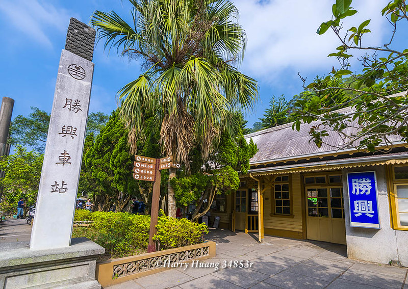
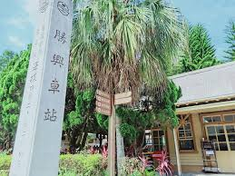
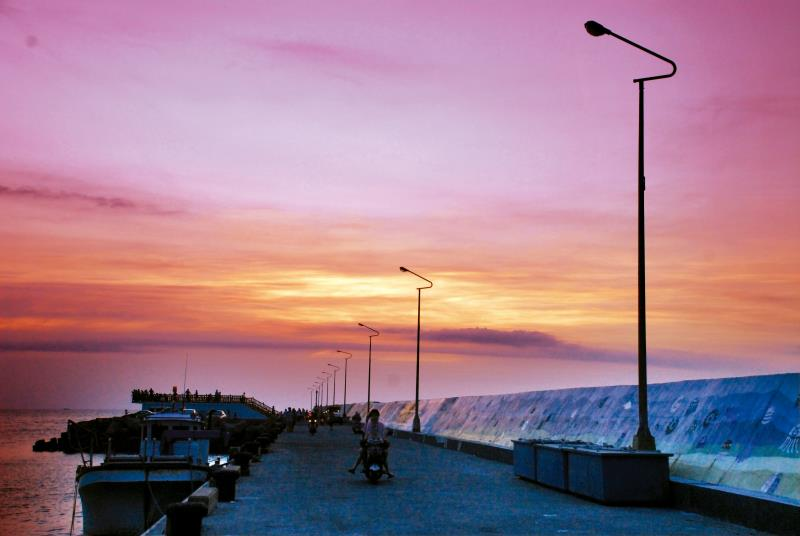
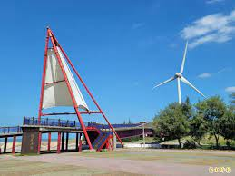
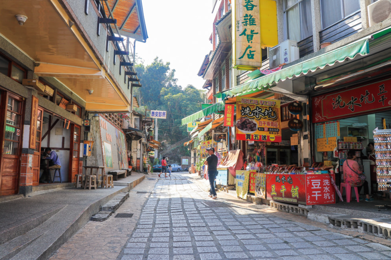
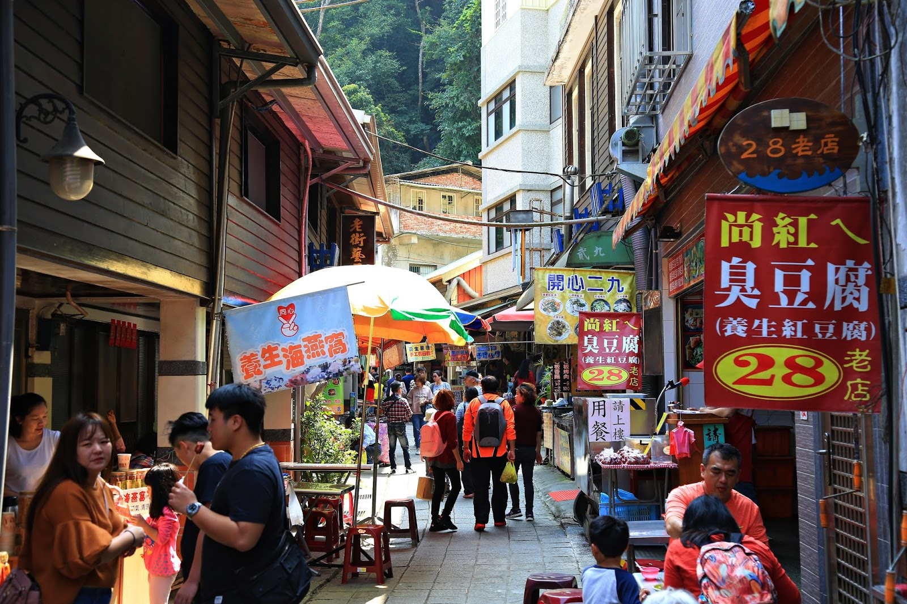

勝興車站
海拔標高402、326公尺，是台灣縱貫鐵路最高點，該站設於清光緒29年(1903)。
原稱「伯公坑」信號場，後改名為十六份信號場。民國24年，又改稱「十六份驛」，
開始客運及貨運業務。日治時期山線鐵路之興築，自民國前十年起分段舖設，
竹南苗栗段於民國前9年5月25日完成通車。同年10月17日，苗栗三義完成通車
勝與站座落山谷中的小台地上，整棟建築係以木頭為建材，每根標柱都完全不使用釘子，
勝興車站附近有九座山頭環繞，造型十分特殊，具有避邪的作用，站區景致的布置，極富巧思，各色花木，隨地勢栽植，錯落有數，看來賞心悅目，台灣鐵路沿線各站，景色有如此明媚多姿者，實在不多。
站外十數戶民家聚居，小小山村，深處群山中，居民和緩悠然的生活步調，使人深深著迷。勝
與至關刀山的地段，屬鯉魚潭水源保護區，得以保有一片茂密的森林，道路蜿蜒伸長其間，清涼靜謐，意境幽雅。
開放時間：全日開放
地 址：苗栗縣三義鄉勝興村14鄰勝興88號
服務專線：+886-37-878599


勝興車站
竹南龍鳳漁港
位於竹南鎮龍鳳里的龍鳳漁港，為冷水溪出海口及龍鳳大排交接處南岸的一處天然漁港，因鄰近海域多數為礁石質地，底棲魚類多不勝數，
漁產種類極為豐盛，如烏魚、花之、白鯧等，一年四季街可捕獲，歸屬於第三類漁港。
龍鳳漁港位置緊鄰著西濱公路，也是全台唯一位於海線縱貫線沿線的漁港，交通十分便利，再縣政府大力推動富麗漁村及漁港的美化政策下，
已經規劃成唯一處觀光漁港，朝向多元化經營模式發展。
以龍鳳漁港為核心，串連北邊的崎頂濱海遊樂區與南邊的溼地觀光休閒區，成為一個豐富完整的觀光動線，十分適合從事各種具備海強一席的休閒活動，
每逢假日總是吸引絡繹不絕的遊客。
龍鳳漁港景色優美、環境整潔，周邊遊憩設施規劃的十分完善，在港區設置有景觀平台，夜間在美麗的照明設備襯托下增加不少情調，也讓海邊的夜景更加美麗。
漁港旁還有一片木麻黃樹林，在豔陽高照的夏天很適合當做您乘涼休憩的好地方，在這邊慢跑、散步甚至騎乘單車，可以達到放鬆身心又鍛鍊身體的目的。
為了增加沿海漁港的觀光資源，帶動沿海休閒旅遊的氣氛，提昇漁民的收益，縣政府投下鉅資興建的「龍鳳漁港跨海景觀橋」於2008年正式啟用，白色風帆造型，
美麗堅實的鋼骨結構，讓民眾可以在上面賞海景，騎單車，成為最受遊客喜愛的熱門場景。
開放時間：全日開放
地 址：苗栗縣竹南鎮龍鳳里21鄰龍江街369巷15號
服務專線：+886-37-464155


竹南龍鳳漁港
清安豆腐街
清安村的清安街是一條「丁」字型的古老街道，街上雜貨店、小吃店、麵館、餐廳林立，由於有不少店家專賣手工豆腐，因此有「豆腐街」之稱，又因洗水溪和汶水溪匯流經過，故亦稱洗水坑老街。
來到著名的豆腐街當然要嘗嘗這裡的手工豆腐，煎、炸、炒、湯…不論你喜好何種風味，清安豆腐街都能滿足你！
一眼望去，石板路雖然不長，提供的豆腐料理可是琳瑯滿目，從常見的香酥豆腐、涼拌豆腐、青菜豆腐湯，到少見的藥燉豆腐、豆
腐丸子…等，煎、炸、炒、湯，應有盡有，令人垂涎三尺，食指大動！不管喜好何種風味，所有豆腐老饕來到這，都會因眼前美味而感覺相見恨晚的。
飽足後信步漫遊，高懸的樸拙木製招牌，腳下是石磚路，傳統特色手藝與台灣聚落文化的特殊結合，使這裡瀰漫蒼蒼古風。然而稍加留意，就能發現店家各逞巧思，只為秀出特色！
從引人注目的「唉呀豆腐店」、小雜貨店「光陰的故事」細數流逝韶光，到隔壁瀰漫著濃濃離情的「為我停留」招牌，令人會心一笑。立意新穎的招牌，成了甘美豆腐街之外的又一風情。
開放時間：星期一-二休息，星期三-日 上午10:00–下午18:00
地 址：苗栗縣泰安鄉清安村清安街洗水坑豆腐街
服務專線：+886-37-941025


清安豆腐街